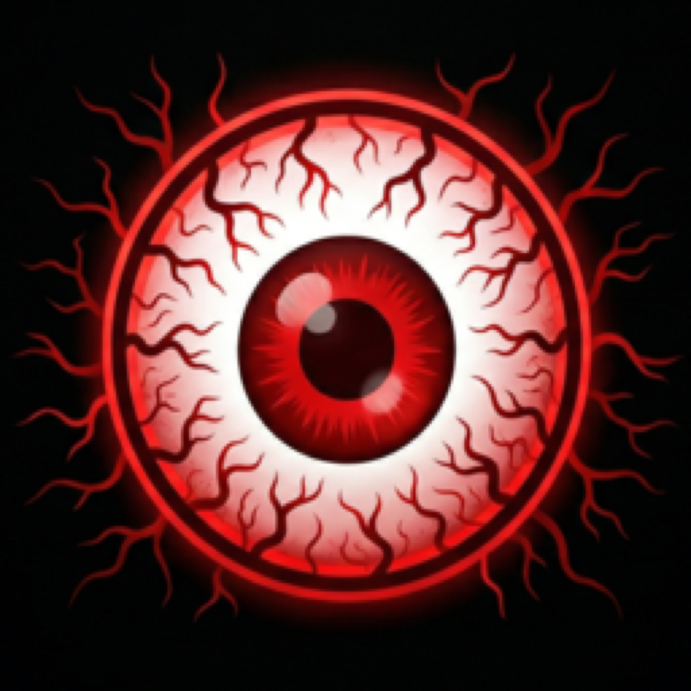

RedEye VB
A high-accuracy emulator for the Nintendo Virtual Boy — built natively for Apple Silicon. Run homebrew, public-domain test ROMs, and your own legally-acquired backups at the original 50 FPS.
Download on the Mac App StoreFeatures
- Full V810 CPU + VIP video + VSU audio emulation, accuracy-verified against Mednafen
- Save states (8 quick slots) and real-time rewind
- TAS sequencer with frame-by-frame input recording for tool-assisted speedruns
- Multiple display modes: anaglyph 3D, side-by-side, over-under, cross-eye, single eye
- Custom color palettes — original VB red, Game Boy green, amber, pink, or pick your own
- Built-in scanlines, CRT curve and LCD grid shaders, plus loadable RetroArch GLSL shaders
- Capture H.264/AAC video and PNG screenshots of your gameplay
- Cheats engine with built-in code database for hundreds of homebrew titles
- Full debugger — disassembler, memory viewer, breakpoints, watchpoints, sprite/tile/world viewers, oscilloscope
- Link-cable netplay over your local network for two-player homebrew sessions
- MFi controller support (PlayStation, Xbox, 8BitDo) plus configurable keyboard
- Auto SRAM save/load, IPS/BPS ROM patching, debug-symbol file loading
About ROMs
RedEye VB is an emulator only and includes no games. To use it, you supply your own ROM files (.vb) — legally permissible for software you own or for freely-distributed homebrew. The Planet Virtual Boy community hosts a large catalogue of homebrew and public-domain test ROMs.
Requirements
- macOS 12.0 or later
- Apple Silicon Mac (M1 or newer)